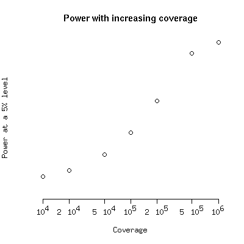

Data and R scripts for
Extreme-depth re-sequencing of mitochondrial DNA finds no evidence of paternal transmission in humans
by Pyle, Hudson, Wilson, Coxhead, Smertenko, Herbert, Santibanez-Koref and Chinnery.
Data Availability
Data
used for this submission will be made available on request to the
ALSPAC executive committee (alspac-exec@bristol.ac.uk).
The ALSPAC data management plan (available
here)
describes in detail the policy regarding
data sharing, which is through a system of managed open access.
which is through a system of managed open access.
Simulated data in the format required for this manuscript is here.
These simulated data are the counts of aligned short haplogroups for
four mother, father, child trios, for three different mtDNA haplogroup motifs.
R Code
The file PaternalTransmission.R contains R
code for power calculations to support analysis. This code requires the VGAM R package that
is available from CRAN.
There are four functions in this code.
- bootHT(mother,child,nm,nc,n_boot=100000)
- A function to perform the hypothesis tests in Pyle et al. This takes the number of
reads matching the father's mtDNA (for a mismatching father), and the total number of maternal and paternal
reads and tests this against the distribution of reads for the observed mtDNA counts in oocytes and sperm.
This function takes the parameters:
- mother
- The number of maternal counts that match the father
- child
- The number of reads that match the father in the child.
- nm
- The total number of maternal reads
- nc
- The total number of child reads
- n_boot
- The number of bootstrap samples to take.
- PaternalTransmission0(mother,child,nm,nc,n_boot=100000)
- A function to test whether the data are consistent with a paternal contribution of 0. This assumes that the
child's mismatching haplotype is at the same frequency as the mother, either due to misscoring or
inherited heteroplasmy:
- mother
- The number of maternal counts that match the father
- child
- The number of reads that match the father in the child.
- nm
- The total number of maternal reads
- nc
- The total number of child reads
- n_boot
- The number of bootstrap samples to take.
- powerFunc(coverage,het,freq,reps=1E5,critical=0.05,show_plot=FALSE)
- This function calculates the proportion of times that a hypothesis test that the
proportion of mtDNA contributed by the father is freq would be rejected in favour of
a one-tailed alternative hypothesis that the proportion is less than freq, under conditions
of extreme depth resequencing at coverage coverage.
This function that takes the parameters:
- coverage
- The coverage which is assumed to be the same in mothers and children
- het
- The frequency of heteroplasmy for this haplotype
- freq
- The relative frequency of paternal mtDNA amongst all mtDNA.
- reps
- The number of replicates used to calculate the power. By default this is 1E7.
- critical
- The critical value used. By default this is p=0.05.
- show_plot
- Show a plot of the distribution of the difference under H_0, the distribution of differences under
H_1, and the critical value.
- powerFuncB(coverage,het,freq,reps=1E7,critical=0.05)
- This function performs the power calculation on a different test. This test is a test against
a null hypothesis that the proportion transmitted is 0, against an alternative that the proportion transmitted is greater than 0, when the
proportion of mtDNA contributed by the father is greater than 0. These power calculations are performed
where the frequency of paternal heteroplasmy is freq, and the heteroplasmy of the haplotype
is het under conditions of extreme depth resequencing at coverage coverage. This test
will give the same power as powerFunc, as the tests are equivalent
due to symmetry of the underlying distributions.
Example of the use of these functions can be found within the file.
These functions can be used to investigate the power. To get the following
plot do
myCoverage <- c(10000,20000,50000,100000,200000,500000,1000000)
pow <- sapply(myCoverage,powerFunc,het=0.001,freq=0.0002)
plot(myCoverage,pow,log="x",ylim=c(0,1),ylab="Power at a 5% level",xlab="Coverage",main="Power with increasing coverage",axes=FALSE)
axis(1,at=myCoverage,labels=c(expression(10^4),expression(2 %*% 10^4),expression(5 %*% 10^4)
,expression(10^5),expression(2 %*% 10^5),expression(5 %*% 10^5),expression(10^6)))
axis(2)

Note that these calculations can take a little time if you choose a large number of replicates for
the power calculations. For the manuscript 1E7 replicates were used.
Ian.Wilson@ncl.ac.uk
Last Modified 2nd January 2014